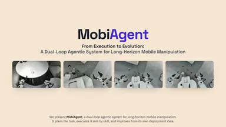

CoRL 2026
MobiAgent: Dual-Loop Recursive Policy Self-Improvement for Long-Horizon Mobile Manipulation
One loop plans, executes, and recovers during a task. A second loop revisits those runs to discover and refine skills for future tasks.